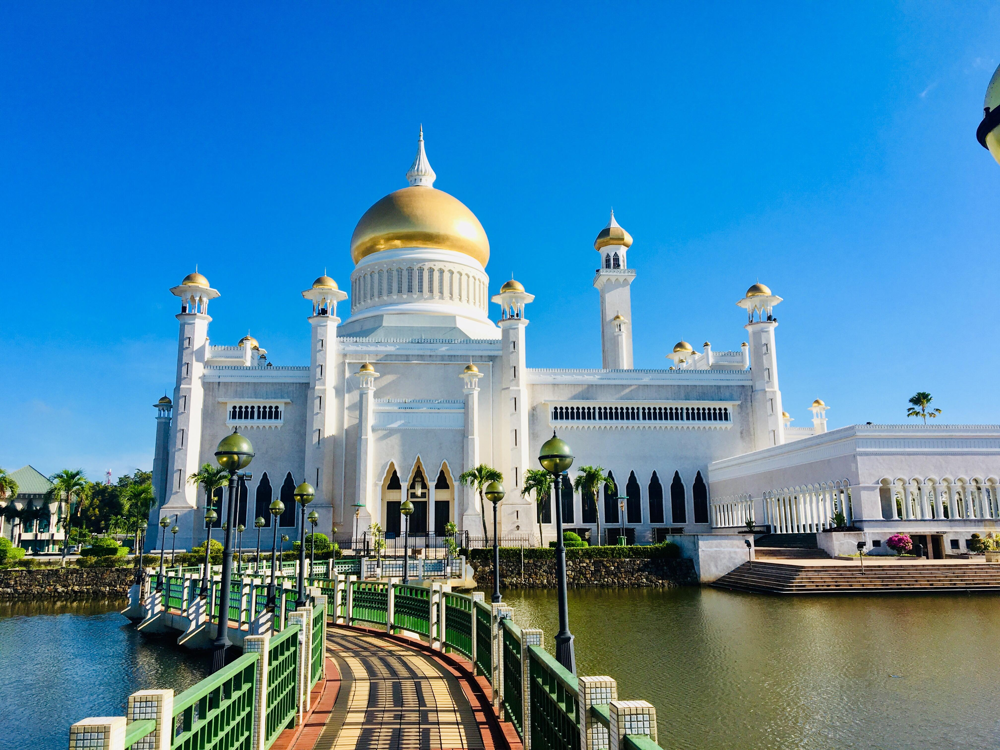
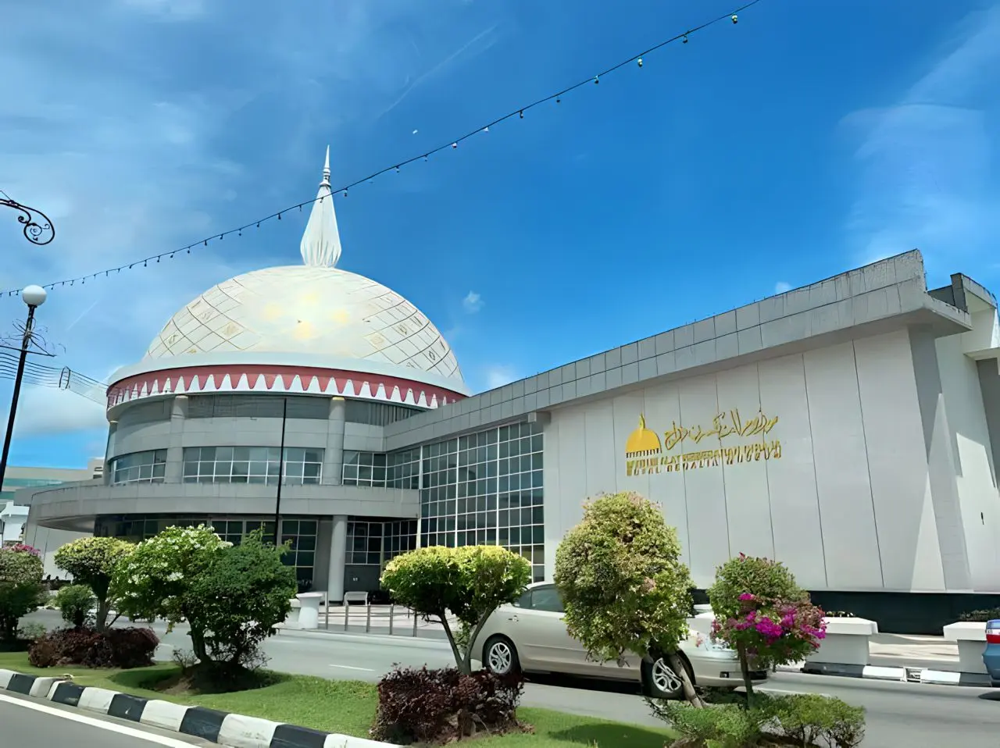
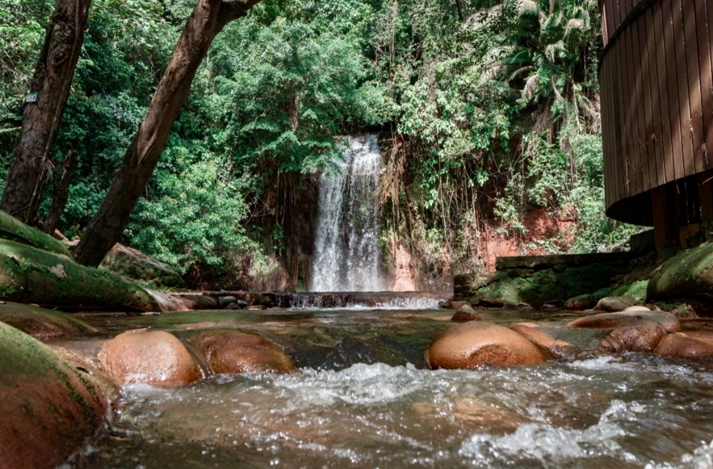
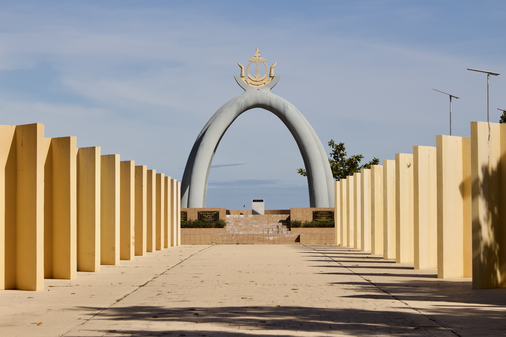
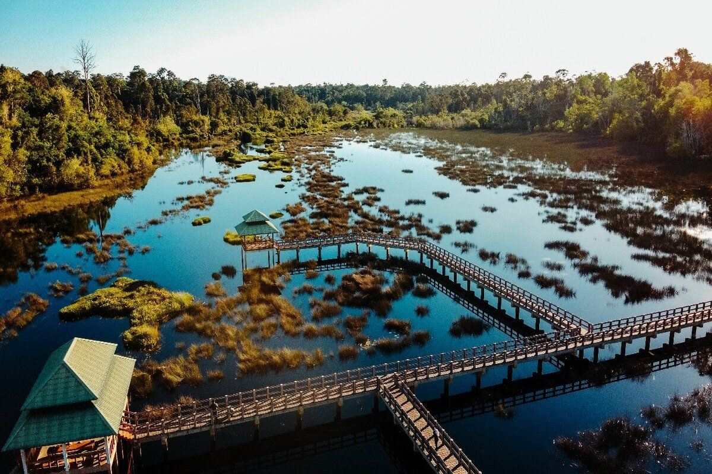
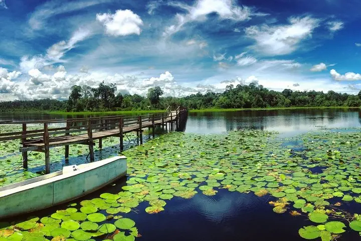
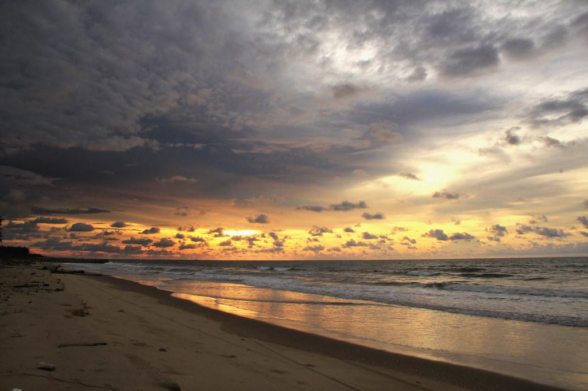
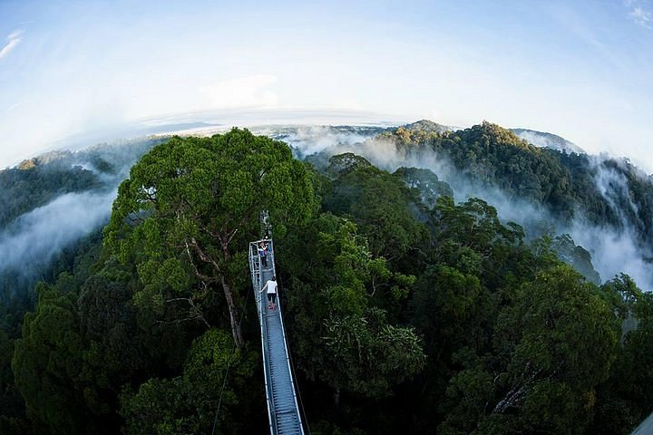
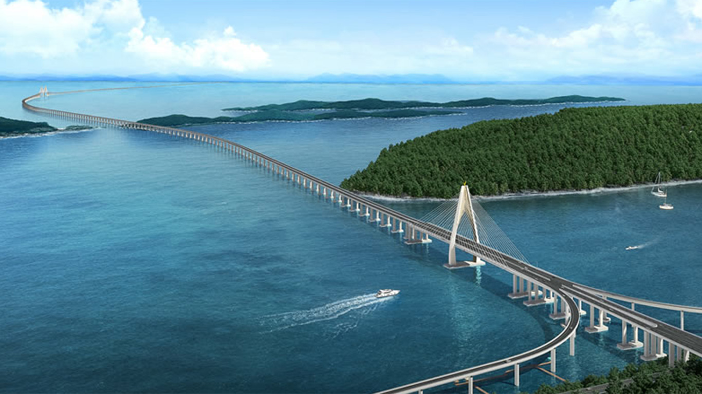

Omar Ali Saifuddien Mosque
The golden-domes landmark of the capital, surrounded by a calm lagoon.
ATTRACTIONS
Brunei may be small but its attractions are full of variety. Explore the top places to visit in Brunei, featuring iconic architecture, historic water villages and pristine rainforests.

The golden-domes landmark of the capital, surrounded by a calm lagoon.

Translated to Water village, a centries old water village that can easily be explored by water taxi.

The home to the Sultanate's heirlooms and regalia from golden chariots to olden days symbolic weapons and shields.

Waterfalls that offers a scenic retreat from urban life and is popular among both locals and tourists.

A monument built to celebrate one billion barrels of crude oil extracted from the onshore Seria field.

A serene dark-water swamp nestled within the Labi Hills Forest Park which have a peaceful lake and recreational park.

Brunei's largest natural lake often visited for birdwatching and quiet nature walks.

Beach that narrow spit of land separates the rough South China Sea from the calm Tutong river.

An ancient rainforests teem with vibrant wildlife and breathtaking landscapes awaits.

A long bridge across Brunei Bay that links Temburong to the rest of the country.